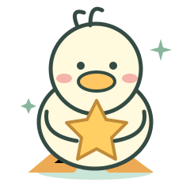

国考训练营 / 学习地图
🔥 0天⚡ 0XP💎 0
YAYA’S LITTLE ADVENTURE
把今天的努力，
攒成喜欢的礼物。
yaya加油！每天 20 题，把上岸路走成一场小冒险。

第 01 章 · 起步不慌
把基础，变成你的底气
6 个模块 · 每关 5 题 · 随时再来一遍
点击关卡开始练习 每日小目标 0 / 20
✧ yaya加油，不赶路，把每一步走稳。
yaya加油！每天 20 题，把上岸路走成一场小冒险。

6 个模块 · 每关 5 题 · 随时再来一遍